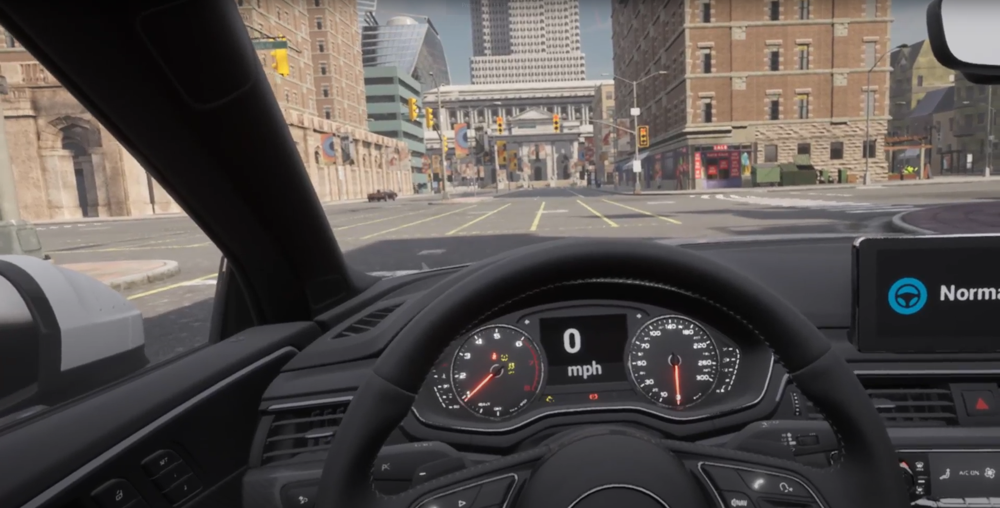

CARLA XR Documentation

Welcome to the CARLA XR documentation.
This project adds Extended Reality functionalities on CARLA (0.9.12), an open-source autonomous driving simulator. The development platform is Windows PC with Oculus Quest2 headset. Since the development is based on OpenXR rather than the proprietary plugin from Oculus, the result should be easy to transfer to other headsets. This project has been developed to support the autonomous vehicle demonstration, education, and development.
Getting Started
Dependencies Installation — Install the CARLA fork of Unreal Engine 4.26 and other dependencies.
Running XR Simulation — Procedures to run the simulation in XR.
Server and Client on Two Machines — Configuring server and client to run on seperate machines
XR Implementations
This section contains the technical details for implementing XR functionalities to CARLA. Information in this section might be helpful for future development.
Preparation and Environment Setup — Preparation before development based on stock CARLA.
VR Camera Attachment — Primary component to turn CARLA into VR.
Vehicle Mesh Rendering and Collision — The separation of high-fidelity rendering and collision handling.
Animation and User Interaction — The implementation of vehicle animation and feedback.
Mixed Reality — The undesireable implementation of mixed reality.